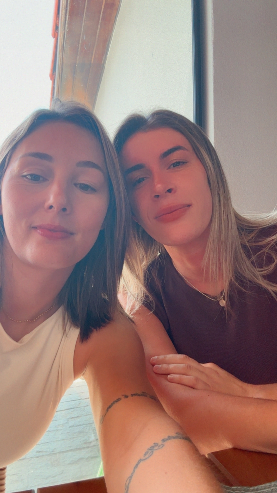

Existe uma teoria que diz que algumas pessoas estão ligadas por um fio invisível. Um fio que não pode ser cortado pelo tempo, pela distância ou pelas circunstâncias. Talvez tenha sido por isso que eu te encontrei justamente quando não estava procurando ninguém. Você estava vivendo a sua vida; eu estava vivendo a minha. A gente tinha histórias diferentes, planos diferentes, lugares diferentes. E, mesmo assim, de alguma maneira, a vida encontrou um jeito de fazer os nossos caminhos se cruzarem. Penso em todas as coisas que precisaram acontecer para eu ter te encontrado: todas as decisões que você tomou, todos os lugares onde esteve, todas as pessoas que conheceu. E comigo aconteceu a mesma coisa. Bastava uma escolha diferente, um dia diferente, uma hora diferente… e talvez nós nunca tivéssemos nos encontrado. Mas nos encontramos. Como se, muito antes de nossos olhares se cruzarem, alguma coisa já soubesse que eles precisavam se encontrar. Talvez esse fio já exista há muito tempo… talvez ele tenha passado por outras histórias, por encontros que não deram certo e por despedidas que doeram… talvez ele tenha ficado esticado durante todo esse tempo, esperando o momento certo para nos aproximar. E então, um dia, sem aviso, você apareceu. E tudo aquilo que parecia acaso começou a parecer destino. Gosto de imaginar que, de alguma forma, sempre existiu um fio ligando você a mim. E que, mesmo quando a gente estava longe, ele continuava ali… esperando. Como se a vida tivesse passado tanto tempo preparando duas pessoas para, finalmente, fazer com que elas se encontrassem. E, se essa teoria estiver certa, então você não apareceu simplesmente na minha vida. Você sempre esteve a caminho dela… e eu também estava a caminho da sua. Por isso, quando penso em nós, eu não gosto de pensar apenas no dia em que nos conhecemos. Gosto de pensar em todos os dias anteriores que precisaram existir para que aquele dia acontecesse. Porque, de alguma forma, tudo nos trouxe até aquele momento. O fio invisível é essa conexão inexplicável entre duas pessoas que, ao se encontrarem, sentem aquela estranha sensação de que sempre estiveram destinadas uma à outra. Depois de encontrar você, eu não quero mais descobrir para onde a vida poderia ter me levado, porque eu gosto de onde ela me trouxe. Eu gosto da ideia de que, entre todas as pessoas do mundo… a gente se escolheu. E vou te escolher todos os dias. Por isso, só me resta te fazer uma pergunta:
Quer Namorar Comigo?
Eu sabia! ♥
Agora é oficial: você é a minha música favorita.